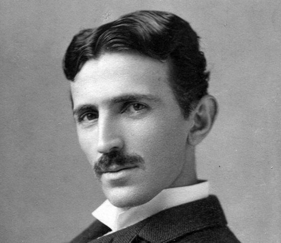

Biografia de Nikolas Tesla
Nikola Tesla (nacido el 9/10 de julio de 1856 en Smiljan, entonces parte del Imperio austrohúngaro, y fallecido el 7 de enero de 1943 en Nueva York, EE. UU.) fue un inventor e ingeniero serbio-estadounidense cuyo interés por los aparatos eléctricos surgió gracias a su madre, Djuka Mandic, quien inventaba pequeños electrodomésticos en su tiempo libre. Tesla se dio a conocer principalmente por diseñar el sistema de corriente alterna (CA), que hoy es el sistema eléctrico predominante en el mundo, y por crear la famosa bobina de Tesla, aún utilizada en la tecnología de radio. Nacido en lo que hoy es Croacia, emigró a Estados Unidos en 1884, aunque antes de ello, después de realizar sus estudios universitarios, se había mudado a Budapest, Hungría, donde trabajó en la Central Telefónica y concibió la idea del motor de inducción. Tras varios intentos fallidos por despertar interés en su invento, tomó la decisión de trasladarse a Estados Unidos a los 28 años. Al llegar en 1884, con apenas la ropa que llevaba puesta y una carta de recomendación para Thomas Edison, se encontró con que las instalaciones de corriente continua de este se expandían rápidamente. Edison lo contrató y ambos trabajaron juntos mejorando diversos inventos, hasta que finalmente se separaron por diferencias profesionales.